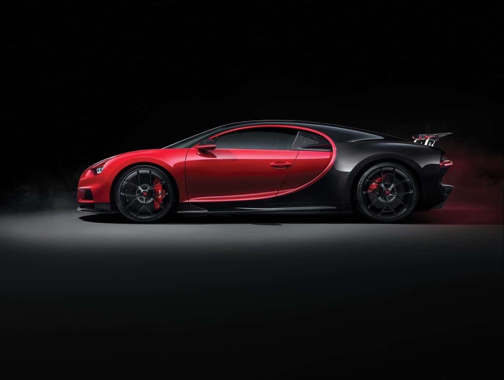

BUGATTI
HOME

Historia
Bugatti es una marca de automóviles francesa de gran lujo y competición fundada en el año 1909 por Ettore Bugatti (1881-1947) en Molsheim, localidad actualmente en Francia y por entonces perteneciente al Imperio alemán. En la actualidad es propiedad del Grupo Volkswagen
Con el lema de "Nada puede ser demasiado hermoso, nada puede ser demasiado costoso", los miembros de la familia Bugatti —Ettore; su hermano Rembrandt (escultor de la célebre mascota del Type 41 Royale, el elefante); y su hijo Jean (talentoso diseñador y piloto) diseñaron y construyeron durante 30 años una serie de lujosos automóviles que destacaron tanto por su rendimiento como por su diseño.
A finales de la Segunda Guerra Mundial la marca, como otras del sector, conoció dificultades económicas y no pudo recuperar el esplendor alcanzado en los años 1920 y 30 pero su prestigio mantuvo el interés por relanzarla como competidora de Maserati o Alfa Romeo durante los años 1950 y 1960.
Desde los años 1980 esta marca fue gestionada por la empresa Bugatti Automobili SpA que adquirió también Lotus, hasta que tras ser comprada en 1998 por el Grupo Volkswagen, se constituyó en empresa de capital francés en el año 2000 con la denominación de Bugatti Automobiles SAS con base en Molsheim.